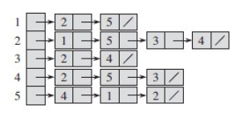
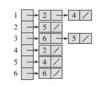

图
定义
图是一个非线性数据结构。G = {V, E}.V是顶点的集合, E是边的集合。
图可以分为以下几种:
无向图: 边没有方向。对于无向图，度 是与顶点相连接的边的数量。有向图: 边有方向。对于有向图, 分为入度和出度。入度 指向该顶点的边的数量。出度 是从该顶点指向其他顶点的边的数量。加权图: 边上带有权值。
图的存储结构
无向图: matrix[i][j]表示从顶点 i 到顶点 j 是否有边。如有边,值为1.否则为0. 无向图的邻接矩阵是对称的。有向图: 与无向图一样,但是非对称加权图: matrix[i][j]的值为权值
- 邻接表由顶点表和边表组成。
无向图: 存储空间O(|V| + 2|E|)有向图: 存储空间O(|V| + |E|)。某顶点的出度就是其边表的个数。入度则是边表中指向该顶点的个数。


图的遍历算法
图的遍历主要有两种方式：广度优先遍历和深度优先遍历。
实现方式： 从一个未访问的顶点开始，沿着一条路走到底，然后从尽头的节点退回到上一个节点，再从另一条路走到底。不断递归此过程。时间复杂度: O(V + E)空间复杂度: O(V)
实现方式： 从起始节点开始，逐层递归所有的邻接节点。然后再从邻接节点开始，逐层递归其所有的邻接节点。时间复杂度: O(V + E)空间复杂度: O(V)
代码实现
Using System;
Using System.Collections.Generic;
public class Graph
{
private int num; // 顶点数量
private int[,] graph; // 邻接矩阵
private bool[] visited; //标记已访问数组
public Graph(int num, int[,] graph)
{
this.num = num;
this.graph = graph;
visited = new bool[num];
}
public void BFS(int root)
{
Queue<int> queue = new Queue<int>();
Visit(root); // 这里的Visit方法可以是对节点进行任何操作；
visited[root] = true;
queue.Enqueue(root);
while (queue.Count > 0)
{
int v = queue.Dequeue();
for (int i = 0; i < num; i++)
{
if (graph(v, i) == 1 && !visited[i])
{
Visit(i);
visited[i] = true;
queue.Enqueue(i);
}
}
}
}
public void DFS(int root)
{
Visit(root);
visited[root] = ture;
for (int i = 0; i < num; i++)
{
if (graph[root, i] == 1 && !visited[i])
{
DFS(i);
}
}
}
public void Visit(int v)
{
Console.WriteLine($"Visited vertex: {v}");
}
}
class Program
{
static void Main(string[] args)
{
int[,] graph = new int[,]
{
{ 0, 1, 0, 0, 1 }, // 顶点 0 的邻接情况
{ 1, 0, 1, 1, 0 }, // 顶点 1 的邻接情况
{ 0, 1, 0, 1, 0 }, // 顶点 2 的邻接情况
{ 0, 1, 1, 0, 1 }, // 顶点 3 的邻接情况
{ 1, 0, 0, 1, 0 } // 顶点 4 的邻接情况
};
int num = 5; // 顶点数量
Graph g = new Graph(num, graph);
g.BFS(0);
// g.DFS(O) 如要在一个代码里进行完BFS后进行DFS，需要重置访问状态，也就是让visited里的值都变回false;
}
}